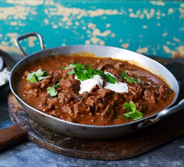
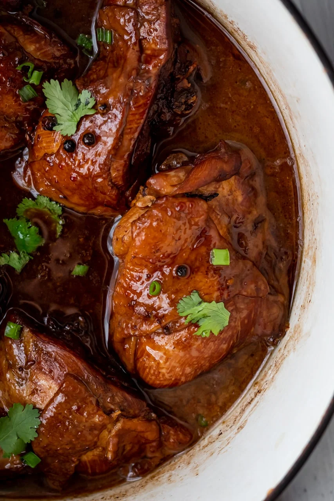

Hungarian

Hungarian Goulash
Hungarian goulash is a hearty stew originating from Hungary,
typically made with tender chunks of beef, onions, paprika, and other spices, simmered to perfection for a comforting and flavorful dish.
- 4 tbsp olive oil
- 1 large onion chopped
- 2 cloves of garlic, finely chopped
- 700g of stewing steak, cut into chunks
- 75ml of dry white wine
- 1 green pepper, deseeded and chopped finely
- 1 red pepper, deseeded and chopped finely
- Freshly ground black pepper
- 2 tbsp of tomato puree
- 2 diced tomatoes
- 300ml beef stock
- 1 tsp of Italian seasoning
- 2 tbsp of paprika
- 30g plain flour
- 150ml soured cream
- Freshly chopped parsley for serving
Ingredients:
Directions:
- Heat oven to 160°C / gas 3.
- Heat 1 tbsp of olive oil in a flameproof casserole dish, or heavy saucepan, sprinkle the 700g stewing steak chunks with 30g plain flour, and brown well, do it over three batches and use 1 tbsp of olive oil, each time. Set browned meat aside.
- 1 tbsp of oil to the casserole dish, followed by 1 large thinly sliced onion, 2 finely chopped garlic cloves, 1 green pepper, 1 red pepper, both finely sliced, fry until softened around 5-10 minutes.
- Return the beef to the pan with 2 tbsp tomato puree, and 2 tbsp paprika, cook stirring for 2 minutes.
- Add in 2 diced tomatoes, 75 ml white wine and 300 ml beef stock, cover and bake in the oven for 90 minutes to 2 hours or cover it and cook it on the hob for an hour and remove the ladle after 45 minutes.
- Sprinkle over 2 tbsp flat leaf parsley leaves, season well with salt and freshly ground pepper, stir in 150 ml of soured cream and serve.

Chicken Adobo (Adobong Manok)
Adobo is a cooking method used in the Philippines. It involves braising protein in a liquid composed of vinegar, soy sauce, peppercorns, and garlic.
- Chicken thighs – You can use any kind of chicken for this recipe.
- Garlic – One of the traditional ingredients used in adobos. Adds a nice flavor to the braising liquid.
- Oyster sauce – Adds umami and salty flavors to this braising liquid. You can substitute oyster sauce with soy sauce. For a gluten free alternative, use tamari.
- Dark soy sauce – This ingredient adds an umami flavor and gives the chicken its dark brown color. You can use regular soy sauce as well, but you won’t get the same coloring. For a gluten free alternative, use tamari.
- White vinegar – Most adobos traditionally use white vinegar. A good substitute is apple cider vinegar.
- Light brown sugar – The sweetness from the sugar balances out the salty flavors of the oyster sauce and dark soy sauce.
- Bay leaves and black peppercorns – Adds a slightly bitter flavor to the dish which lightens up the heavy flavors.
Ingredients:
First heat 1 tablespoon of oil in a big pot. I used a Dutch oven. Add chicken thighs skin side down and sear on both sides. Once done searing the chicken, add the garlic, oyster sauce, and soy sauce. Mix to the coat the chicken. Add the vinegar, brown sugar, bay leaves, and peppercorns. Bring the liquid to a boil and lower to a simmer. Simmer on low heat for 1 hour. Flip the chicken every 20 minutes, so each side gets an even amount of color. Serve chicken over a bed of rice.
Mexican Recipes

Guacamole
A creamy dip made from mashed avocados, onions, tomatoes, lime juice, and cilantro.
Chicken Enchiladas
Tortillas filled with shredded chicken, cheese, and enchilada sauce, then baked until bubbly.
Indian Recipes
Chicken Tikka Masala
Tender pieces of chicken marinated in spices and yogurt, then cooked in a creamy tomato sauce.
Vegetable Biryani
A fragrant rice dish cooked with mixed vegetables, spices, and saffron.